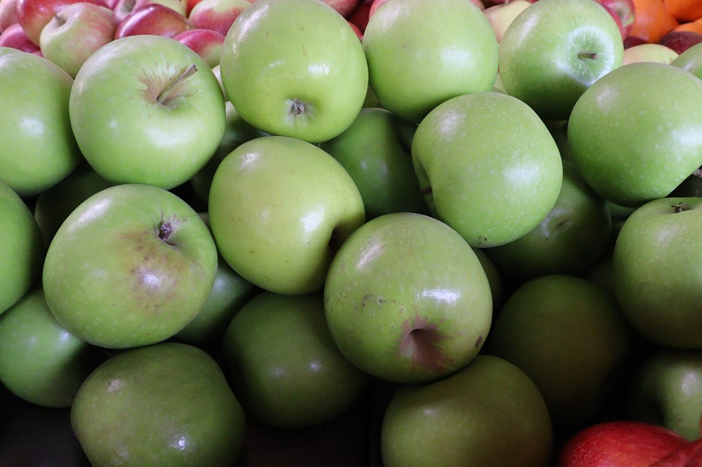
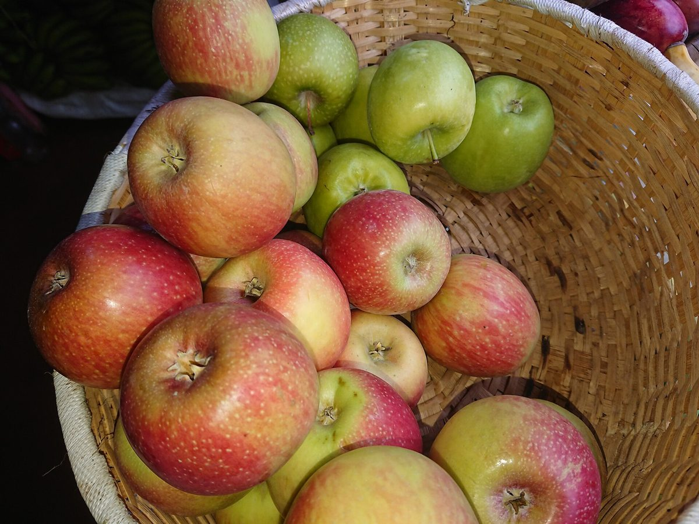
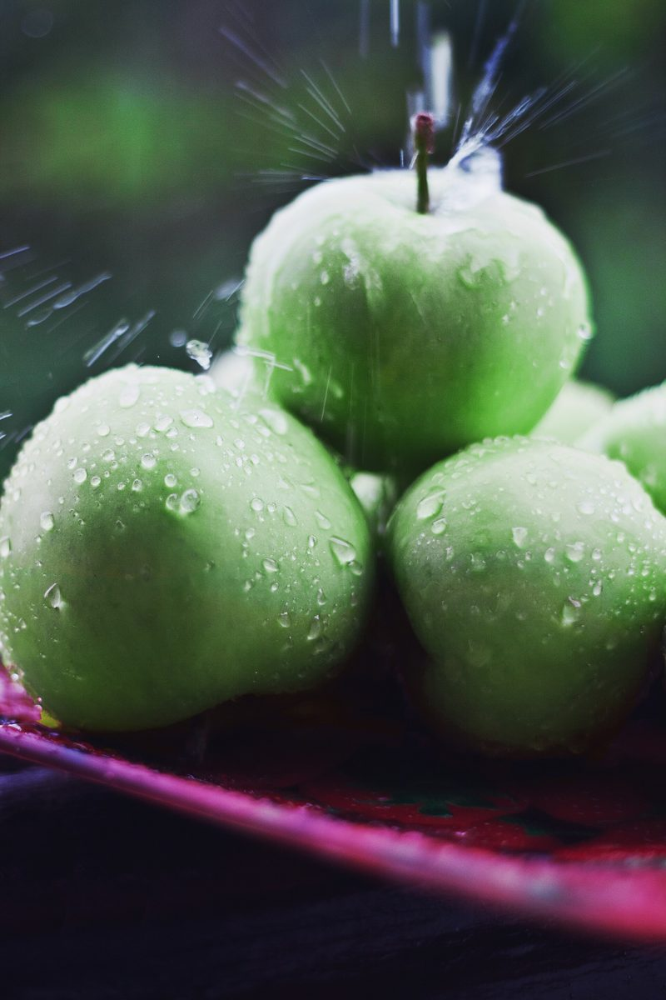
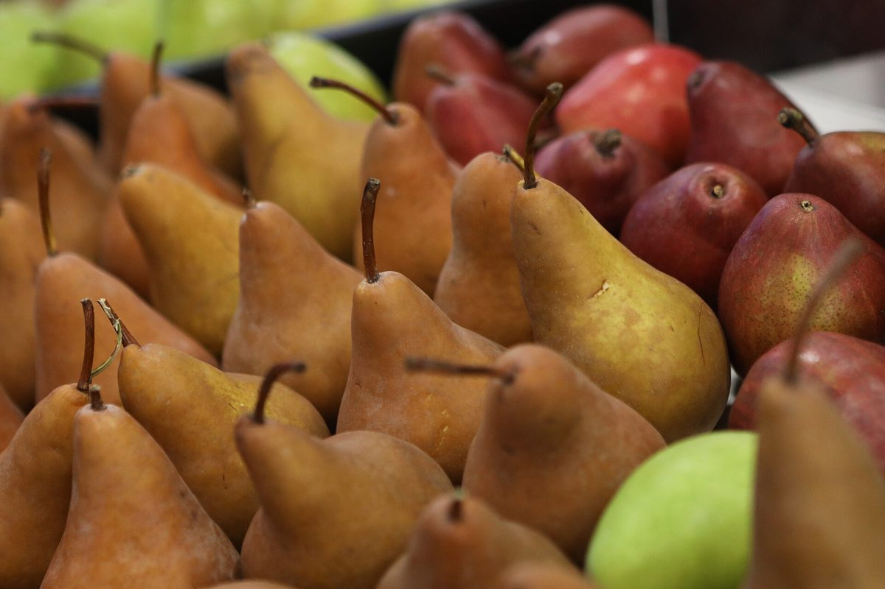
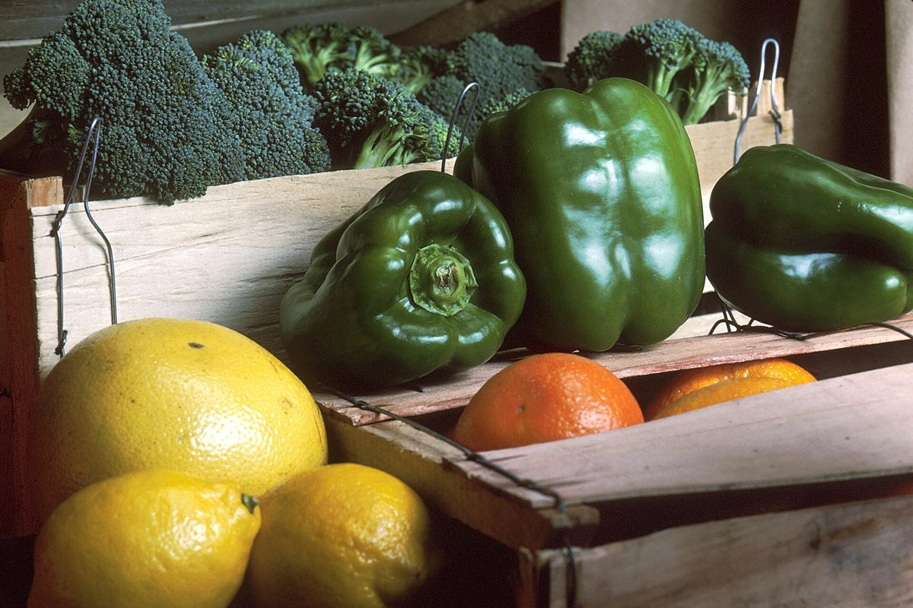

カフェ / 長崎県雲仙市小浜町
アン シャーリー
ハウス
- 品目
- カフェ
- 所在地
- 〒854-0514
長崎県雲仙市小浜町北本町２１９ - 営業時間
- 準備中
- メニュー
- 準備中
準備中

制作側の連想
りんご箱の「出荷ラベル」
これは制作側の連想で、お店の理念・由来とは無関係です。屋号の響きから、果物を詰める木箱と、その側面に貼る出荷ラベルを思い浮かべました。そこでこのサイトは、五枚のラベル(No.1〜5)を一箱ずつ開けていく作りにしています。お店が果物を扱っているかどうかは分かりません。
三段積みの木箱(イメージ)
箱の中身をのぞく
以下の写真は雲仙市小浜町やお店とは関係のない、国外・撮影地不明のフリー素材です。お店で提供しているものを示すものではありません。
段1国外のイメージ(ルワンダ) 撮影地不明のイメージ 撮影地不明のイメージ



段2撮影地不明のイメージ

ご案内
確認できていること
| 所在地 | 〒854-0514 長崎県雲仙市小浜町北本町２１９ |
|---|---|
| 電話 | 0957-74-4123 |
| 営業時間 | 準備中 |
| 定休日 | 準備中 |
| ご予約 | 準備中 |
| 駐車場 | 準備中 |
| SNS | Instagram @anneshirley_house |